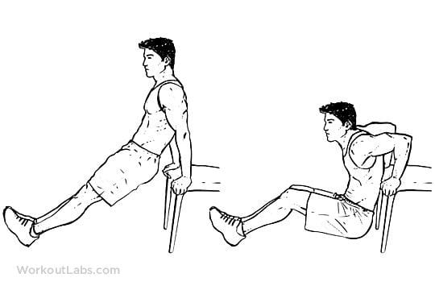
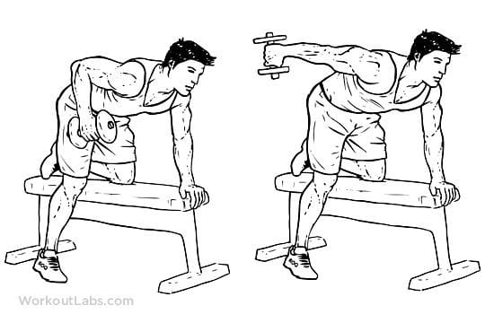
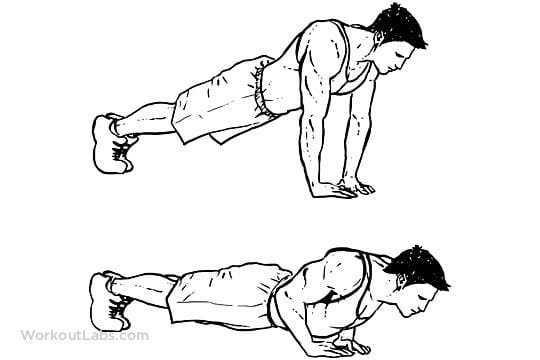
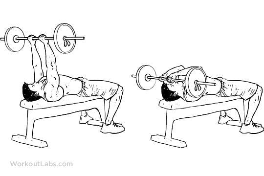
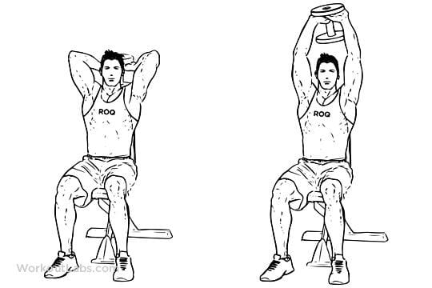

Tricep Dip

To perform a dip, the exerciser supports themselves on a dip bar with their arms straight down and shoulders over their hands, then lowers their body until their arms are bent to a 90 degree angle at the elbows, and then lifts their body up, returning to the starting position.
Tricep Kickback

With dumbbells
This exercise helps you learn how to target the triceps. Choose a weight that’s slightly challenging yet allows you to complete all of the sets using proper form and without straining.
Start with dumbbells that are 5 to 10 pounds each and gradually increase the weight as you gain strength. Substitute soup cans or water bottles if you don’t have weights.
This exercise can also be done one arm at a time in a split stance while standing or kneeling.
To do this:
Hold a dumbbell in each hand with your palms facing in toward each other, keeping your knees bent slightly.
Engage your core and maintain a straight spine as you hinge forward at the waist, bringing your torso almost parallel to the floor.
Keep your upper arms in close to your body and your head in line with your spine, tucking your chin in slightly.
On an exhale, engage your triceps by straightening your elbows.
Hold your upper arms still, only moving your forearms during this movement.
Pause here, then inhale to return the weights to the starting position.
Do 2 to 3 sets of 10 to 15 reps.
Diamond Push-ups

For the diamond pushup, begin by performing 2–3 sets of 8–15 repetitions. Choose your sets and repetitions based on your ability to maintain good technique throughout all sets and repetitions.
Begin on all fours with your knees and toes flexed and in contact with the floor. Your hips should be over your knees. Your hands should be slightly narrower than your shoulders. Connect your thumbs and index fingers to create a diamond shape. Grip the ground with your hands, and rotate your shoulders outward to engage your lats.
Straighten your legs to lift your knees off the ground so you end up in a pushup position. Your legs should be hip-width apart or together.
Pretension your shoulders and hips while engaging your core. Squeeze your quads and glutes. Your chin should remain tucked, as if you were holding an egg under your chin. All repetitions should begin from this position.
Pull your chest toward your hands by bending your elbows. Your shoulder blades should retract as you lower to the ground.
Lower your body until your upper arms are alongside your ribcage. Pause for a second at the bottom of the movement.
While maintaining your alignment, initiate the upward movement by squeezing your chest and straightening your elbows. Your shoulder blades should protract as you push to the top of the movement.
Finish the movement by squeezing your chest and triceps.
Skull Crusher

If you’re new to this exercise, start with a low weight and work on perfecting your form. As you become familiar with the exercise and gain strength, you can slowly increase the weight you use.
Equipment used: flat bench, barbell (ideally an EZ Curl bar)
Sit on the bench with the barbell on your lap.
Grasp the barbell with a shoulder-width grip, palms facing down, while keeping your wrists straight.
Lie on your back as you bring the weight up to a position over your collarbone.
Keeping your shoulders stable, slowly bend your elbows, bringing the weight down to just past your head. Keep your elbows pointing straight ahead as you lower the weight.
Hold for 1–2 seconds. Then straighten your elbows, pushing the weight back to an overhead position. Keep your humerus bone fixed in space throughout the movement.
Perform 3 sets of 8–12 repetitions.
Overhead Tricep Extension

The most common way to perform this exercise is using a dumbbell (or kettlebell) while standing or sitting. Hold the weight overhead by grasping the inside dumbbell plate surface with both hands, or by grasping both handles of the kettlebell.
Slowly bend your elbows and lower the weight behind your head as far as you can. Remember to keep your trunk upright and your core engaged. The weight should follow the path of your spine.
Then, at the lowest point, straighten your elbows and extend the weight back overhead. Hold the fully extended position for a moment, then repeat. Keep the movement slow and controlled.
Choose a weight that’s challenging but allows you to use good form. Keep the speed of the movement slow and steady.